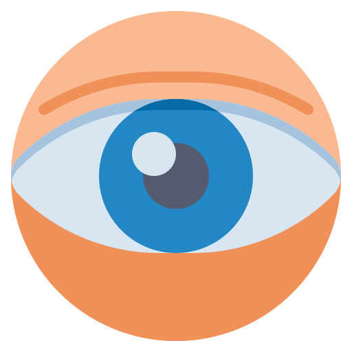
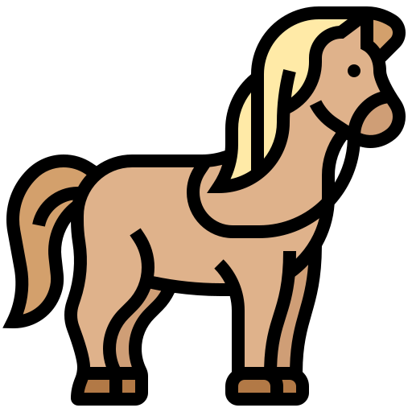
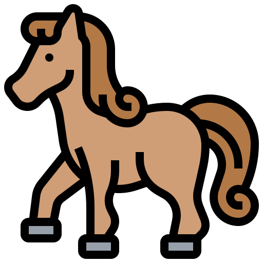
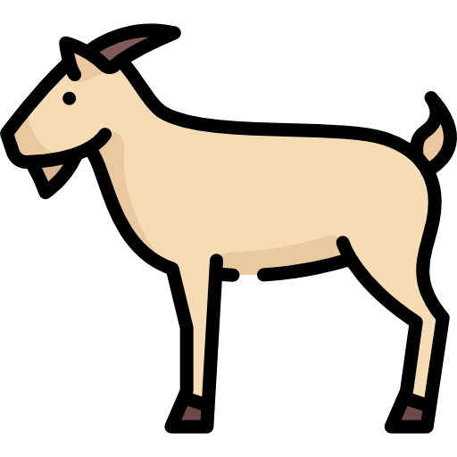
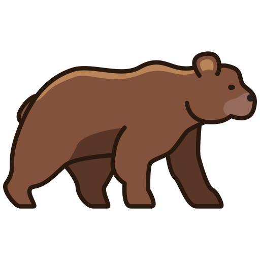
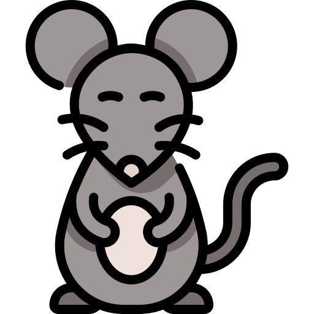
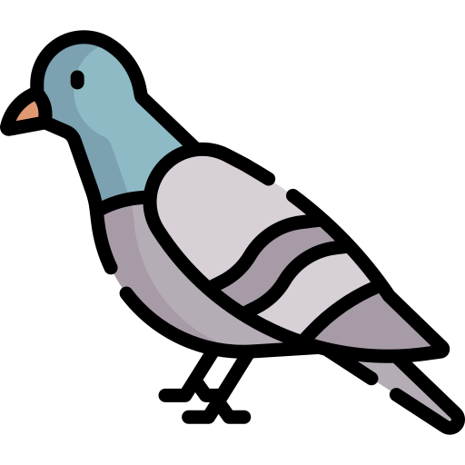
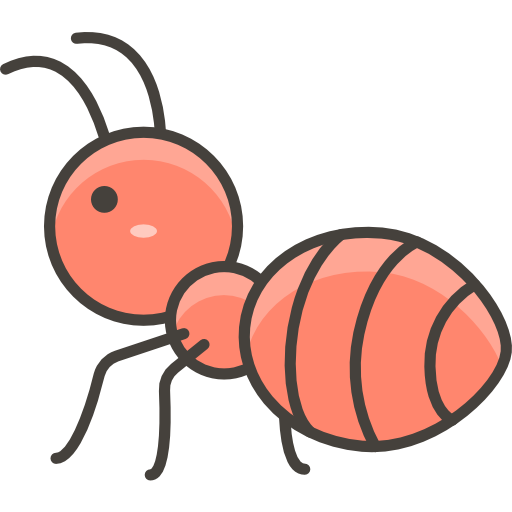
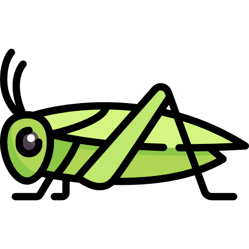
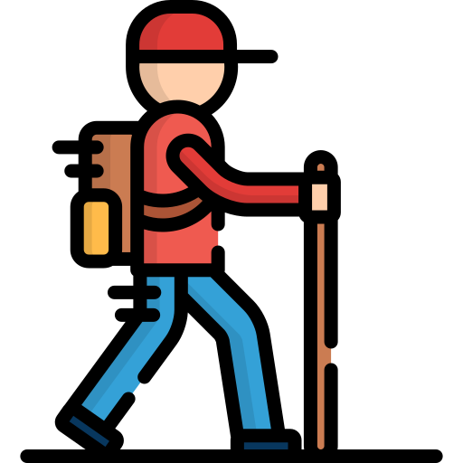

Abecedario - Achahala / Achawaya
- A (a)
- anka - gabilán
- CH (cha)
- chuqllu - maíz
- ĆH (ćha)
- ćhićhu - gestante
- H (ha)
- hiwlla - gaviota
- I
- inchu - picaflor, colibri
- K (ka)
- kulluśh - perdiz
- L (la)
- laćhkay - burilar
- LL (lla)
- llama
- M (ma)
- mishikuna - gatos
- N (na)
- nuna - persona, nunakuna -personas
- Ñ (ña)
- ñawi - ojos, ñawikuna - ojos
- P (pa)
- pillpintu - mariposa
- Q (la q es muda, puede alargar )
- qućha - laguna
- R (ra)
- rakacha - tuberculo de selva
- S (sa)
- sipla - pelado, calvo
- SH (sha)
- shimi - boca
- ŚH (śha)
- śhukśhu - palo para hilar
- T (ta)
- talwish - tarhui
- U
- ukuśh
- W (wa)
- waćhuku / waćhaku - faja
- Y (ya)
- yanta - leña
- Vocales alargadas
- aala - maguey
- iira - era
- uuli - plástico
Los Números - yupaykuna
- Cero - walla
- Uno- huk
- Huk wasi - una casa
🏠
- huk wallpa - una gallina
🐓
- huk mishi - un gato
🐈
- Dos- ishkay
- ishkay challwa - dos pescados
🐟 🐟
; - ishkay akas´h - dos cuyes
- ishkay aks´hu - dos papas
🥔 🥔
- Tres - kimsa
- kimsa waaka - dos vacas
- kimsa inchu - dos picaflores
- Cuatro - tawa
- tawa chuspi - cuatro moscas
🪰 🐟
- Cinco - pichqa
- pichqa allqu - cinco perros
- Seis - suqta
- suqta lumi - seis piedras
- Siete - qanc´his
- qanc´his wishla - siete cucharones
- Ocho - pusaq
- pusaq muc´hka
- Nueve - isqun
- isqun as´hnu
- Diez - ćhunka
- ćhunka utulukuna - diez gallos
- A partir del número 11 en adelante se usa el sufijo posesor YUQ / NIYUQ
- 11 - ćhunka hukniyuq (kuk + niyuq)
- 12 - ćhunka ishkayniyuq (ishay + niyuq)
- 13 - ćhunka kimsayuq (kimsa + yuq)
- 14 - ćhunka tawayuq (tawa + yuq)
- 15 - ćhunka pichqayuq (pichqa + yuq)
- 16 - ćhunka suqtayuq (suqta + yuq)
- 17 - ćhunka qanćhishniyuq (qanćhish + niyuq)
- 18 - ćhunka pusaqniyuq (pusaq + niyuq)
- 19 - ćhunka isqunniyuq (isqun + niyuq)
- 20 - ishkay ćhunka
- 30 - kimsa ćhunka
- 40 - tawa ćhunka
- 41 - tawa ćhunka hukniyuq
- 42 - tawa ćhunka ishkayniyuq
- 50 - pichqa ćhunka
- 60 - suqta ćhunka
- 70 - qanćhish ćhunka
- 80 - pusaq ćhunka
- 90 - isqun ćhunka
- 100 - paćhak
- 179 - paćhak qanćhish ćhunka isqunniyuq
- 1,000 - walanka
- 2021 - ishkay walanka ishkay ćhunka hukniyuq
- 10,000 - hunu
Saludos - Mishki limaykuna
- Allinllachu - hola
- Imanuyllam - hola, ¡imanuyllam! - ¡qué tal!, ¿imanuyllam? - ¿cómo estás?
- Limaykullak - hola
- Allinllam - hola, allinllam - bien
- Ćhaskikullak - hola como respuesta
- Allin muyun - saludo para todo el día
- buenos días - allin waalalla kallaachun ⭐
- Allin waalalla kallaachun walaśhkuna - buenos días jovenes
- Allin waalalla kallaachun wamlakuna - buenos días señoritas
- Allin waalalla kallaachun taytallakuna - buenos días señores
- Allin waalalla kallaachun mamallakuna - buenos días señoras
- Allin waalalla kallaachun urukuna - buenos días niños
- Allin waalalla llapallaykichikpaq - buenos días para todos
- allin muyunlla kallaachun - te auguro un buen día
- allin tutalla kallaachun - buenas noches
La familia - Ayllu
 awilu - abuelo
awilu - abuelo  awila - abuela
awila - abuela mamá - mama
mamá - mama  papá - tayta
papá - tayta - hermana del varón (cuñada) - pani
- hermana de la mujer (cuñada) - ñaña
- hermano de la mujer (cuñado) - tuli
- hermano del varón - wawki
- hijo(a) de la mujer - wawi
- hijo del varón - chuli
- esposo, hombre adulto - wayapa
- mujer - walmi
- nieto(a) - willka
- niñas - wamla akapakuna
- niños - walaśh akapakuna
- señorita - wamla
- joven varón - walaśh
- viejo - awkish
- vieja - chakwaśh
- viudo, viuda - chullaśha
- gente - nuna
- último hijo o hija - ñuñu pawaq
Partes del cuerpo humano - Aychanchikpa śhutinkuna
 uma - cabeza
uma - cabeza - pata - barriga
 chaki - pierna
chaki - pierna  willpa - labio
willpa - labio  kunka - cuello
kunka - cuello -  ñawi - ojo
 linli - oreja
linli - oreja  ulku, paaćha - frente
ulku, paaćha - frente  aacha - cabello
aacha - cabello - uya - cara
- shimi - boca
- quijada - kakichu
 kućhus - codo
kućhus - codo likla - brazo
likla - brazo- pupu - ombligo
- clavícula - usa kanćha
- nuca - kukuti
 waśha tullu - columna vertebral
waśha tullu - columna vertebral- liklashku - axila
 waata - costilla
waata - costilla waśha - espalda
waśha - espalda wiyaw - cintura
wiyaw - cintura maki - mano
maki - mano  rukana - dedo
rukana - dedo maki palta - palma de la mano
maki palta - palma de la mano- uña - shillu
- uña de la mano - maki shillu
- rodilla - uul, unqul
- articulación - muqu
- ćhaki - pie
- piel - karan
- planta del pie - ćhaki palta
- talón - anku
- diente - kilu
- lengua - hallu
- intestino - chunchull
- estómago - pata
- fosas nasales - sinqa ućhku
- faringe - tunkuri
- pulmón - puywan
- tráquea - tunkuśh
- trompas de falopio - wawi muhu pulinan
- ovario - wawi muhu milachiq
- óvulo - wawi muhu
- útero - wawi lunku
- vagina - laka
- seño - ñuñu, chuchu
- vejiga - ishpay pukuchu
- escroto - luntu lunku
- pene - lani
- tésticulo - luntu
- tetilla - chichi
- hueso - tullu
- corazón - śhunqu, śhuu
- riñon - lulun
- sangre - yawar, ñawar
- moco - ñuti
- visícula bilial - qayan
- lágrima - wiqi
- hígado - ñati
- cerumen - linli wila
- pupila - ñawi lulu
- cráneo - uma tullu
- esqueleto - nuna tullu
Los colores - limpikuna
 yana - negro
yana - negro puka - rojo
puka - rojo- yulaa - blanco
 ankash - azul
ankash - azul tunuśh - amarillo
tunuśh - amarillo wirdi - verde
wirdi - verde  uwi - plomo
uwi - plomo- yana ankash - azul oscuro
- amya anhas - celeste
- uwi untay - gris humo
- amya tunuśh - crema
- yana puka - guindo
- chiwanway - anaranjado
- rusasiika - rosado
- kulli - morado
- allpa limpi - marrón
- alwaśh - amarillento
- illaynilaa - plateado
- uurunilaa - dorado
- ućhpaśh - color ceniza
Animales - uywakuna
 challwa - trucha
challwa - trucha lacha - sapo
lacha - sapo hampatu - rana
hampatu - rana ulltu - renacuajo
ulltu - renacuajo llama - llama
llama - llama- wikuña - vicuña
- paku - alpaca
- wanaku - huanaco
 waaka - vaca
waaka - vaca tuuru - toro
tuuru - toro- uña - becerro
-  kawallu - caballo
- mula - mula
-  ćhina kawallu - yegua
- aśhnu - burro
-  kapish - cabra
 uwish - oveja
uwish - oveja allqu - perro
allqu - perro mishi - gato
mishi - gato kunish - conejo
kunish - conejo-  ukumaali - oso
 atuq - zorro
atuq - zorro- puma - puma
- luychu - venado
 añaśh - zorrillo
añaśh - zorrillo- kala ćhupa - muca (carachupa)
- wiskacha - vizcacha
- unchuchukuy - comadreja
- ukuśh - ratón
-  hatun ukuśh - rata
- uśhu mishi - gato montes
 paatu, utaćhaki - pato
paatu, utaćhaki - pato wallpa - gallina
wallpa - gallina utulu - gallo
utulu - gallo chipchi, chiwchi - pollito
chipchi, chiwchi - pollito kuntur - cóndor
kuntur - cóndor- anka - gavilán
- killish - cernícalo
- waman - halcón
 tuku- búho
tuku- búho- yakyaka - lechuza
- akakllu - pájaro pito
- wachwa - ganzo andino
- pariwana - flamengo
- kulluśh - perdiz
-  ulpay - paloma
- chiwaku - zorzal
- inchu - picaflor
 uritu - loro
uritu - loro- tuyaśh - calandrina
- pichiwsa - gorrión
 maśhu - murcielago
maśhu - murcielago
Insectos - kulukuna
 kuyuku - lombriz
kuyuku - lombriz paćhak ćhaki - cien pies
paćhak ćhaki - cien pies pillpintu - mariposa
pillpintu - mariposa-  chikish - hormiga
- wanwaśh - moscardón
 waylish - avispa
waylish - avispa kaćhikaćhi - libélula
kaćhikaćhi - libélula- inchipala - luciérnaga
 mishki tanra - abeja
mishki tanra - abeja añaaru - araña
añaaru - araña mulu kata - mariquita
mulu kata - mariquita rapachu - zancudo
rapachu - zancudo- yulaa kata - manta blanca
 chuklluśh - grillo
chuklluśh - grillo-  chilliku - saltamonte
 ismay kunti - escarabajo
ismay kunti - escarabajo- chullu - caracol
Alimentos -
- shita - yuyo
- ripuyllu - col
- haćha kulish - col nativa
- uchu - rocoto
 lichuka - lechuga
lichuka - lechuga kulanćhu - culantro
kulanćhu - culantro pirihil - perejil
pirihil - perejil hala - maíz
hala - maíz- chuullu - choclo
 alwish - arveja
alwish - arveja yunya - frejol
yunya - frejol aawaśh - habas
aawaśh - habas- talwi - chocho
- kinwa - quinua
 siwara - cebada
siwara - cebada riigu - trigo
riigu - trigo ahus - ajos
ahus - ajos uryaanu - orégano
uryaanu - orégano- Allpa lulinćhu wayuykuna - tubérculos
- kulaw - papa nativa
 akśhu - papa
akśhu - papa- llullu akśhu - papa nueva
- yulaa aśhu - papa blanca
- luntuśh akśhu - papa amarilla
- kallwa akśhu - papa alargada
- maćhka akśhu - papa arenosa
- shili akśhu - papa de chuño
- mishki akśhu - camote
- shakapa - yacón
- yuka - yuca
- maka - maca
- uwa - oca
- maśhwa - mashua
- ulluku - olluco
- rakacha, laaćhu - arracacha
- sanurya - zanahoria
- Frutas - Haćhakunapa mishki wayuyninkuna
 ruuta - plátano
ruuta - plátano- pulupulu - granadilla
- paqay - pacay
- lukma - lúcuma
 palta - palta
palta - palta- chirimuy - chirimoya
- tuunaśh - tuna
- tumwu - granadilla silvestre
- kapuli - aguaymanto
- shankay - cactus
- maatu - variedad de guayaba
- śhawintu - guayaba
- alakanćha - silata
- carnes - aychakuna
 aycha - carne
aycha - carne- waaka aycha - carne de res
- kuchi aycha - carne de cerdo
- uwish aycha - carne de carnero
- akaśh aycha - carne de cuy
- wallpa aycha - carne de gallina
- kuchipa uman - cabeza de chancho
- uwishpa uman - cabeza de carnero
- uwishpa śhunqun - corazón de carnero
- kuchipa yawarnin - sanger de chancho
- wila - grasa
- chalwa aycha - carne de trucha
- comida de casa - Wasi mikuykuna
- uman caldo - caldo de cabeza
- yaku ćhupi - sopa verde
- patachi - sopa de trigo
- ulluku ćhupi - sopa de olluco
- siplaśha hala - maíz pelado
- tamal - tamal
- muti - mote
- akśhu ankay - papa frita
- wayta - pachamanca
- challwa kanka - trucha frita
- wallpa kaldu - caldo de gallina
- akaśh kanka - cuy chaktado
Los sabores - Shimi malliy musyay
- allí aśhnakaćha - oloroso, fragancioso
- puchuśha, unćhiśha - avinagrado
- amya - insípido
- kaćhiisha, kaćhisapa - salado
- puchuu - ácido, agrio
- ćhakćhaa - amargo
- asyaa - maloliente
- ayaa, uchusapa - picante
- aśhnaa - apestoso
- mishki - dulce
- miskisapa - muy dulce
Plantas
- plantas medicinales - Hampi haćhakuna, allin qulakuna
- ruda - ruda
- yawar śhunqu - chupa sangre
- wirwina - verbena
- chikurya - achicoria
- amaśh - paico
- matiku - matico
- tullma-tullma - suelda suelda
- maśhwayllu - mastuerso
- aćhawśhu - ortiga
- yulaa aćhawśhu - ortiga blanca
- yana aćhawśhu - ortiga negra
- wamanlipa - huamanrripa
- mana yupa - enrredadera
- kawallup ćhupan - cola de caballo
- puchiska, shillku - amor seco
- rumiru - romero
- ismuśh - monca
- pacha muña - muña de la puna
- anish - anís
- Árboles - Hatun haćhakuna
- kaliptu - eucalipto
- kiswar - quishuar
- lamlaśh - aliso
- pillku - pilco
- layan - sauco
- ritama - retama
- piita - álamo
- chawal - agave lechuguilla
- Partes de una planta - Haćhapa lakiyninkuna
- lapi - hoja
- wayu - fruto
- wayta - flor
- pisi - raíz
- ilun - tallo
Prendas de vestir - Atalankuna
- Vestimenta de mujer - Walmipa atalankuna
- wikuña chuku - sombrero de vicuña
- lliklla - mantilla
- luusa - blusa
- chumpa - chompa
- kata - manta
- kutun - coton
- kutuncha - mini coton
- waćhaku - faja
- hustan - fustan
- wayta wallin - pollera bordado
- hanapa - mil rayas
- lulipa - falda interno
- makitu - maquito
- Vestimenta de varón - Walaśhpa atalankuna
- chuku - sombrero
- tirnu - saco
- ishtira chuku - sombrero de paja
- kamisa - camisa
- chullu - gorro de lana
- punchu - poncho
- wanka chaliku - chaleco wanka
- śhukuy - ojota
Pronombres
- yaqa - yo
- yaqa + nchik = yaqa
nchik
- nosotros/as (inslusivo) - yaqa + kuna = yaqakuna - nosotros/as (excepto ustedes)
- qam - tú / ustedes
- qam + kuna = qamkuna - ustedes
- pay - él / ella
- pay + kuna = paykuna - ellos / ellas
Verbos
- Asiy - reir / asikuy - reirse
 likay - mirar
likay - mirar  mikuy - comer
mikuy - comer  puñuy - dormir
puñuy - dormir-  puliy - caminar
- takiy - cantar
 talpuy - sembrar
talpuy - sembrar- śhukay - silbar
- apaliy - guapear
- sićhuy - escribir
- kuchuy - cortar
- muskiy - oler
- uyaliy - escuchar
- yatay - palpar
- yaćhachiy - enseñar
- tuśhuy - bailar
- paćhkay - saltar
- michiy - pastar
- puchkay - hilar
- awsay - jugar
Videos
- Picaflor de los Andes - Cutucha
wankayuq kutucham kaa
suylalla śhukuyniyuq
kallaśhlla kalsunniyuq
waylaśhta tuśhukullaa
wankayuq kutucham kaa
- Yunka malka
Yunka Malka tunaśh pinka
Yunka Malka śhankay kaśha
Ama ama kaśhamaychu
Ama ama ipumaychu
Pintay masllam pallaśhayki
Pintay masllam killuśhayki
Yunka Malka tunaśh pinka
Yunka Malka śhankay kaśha